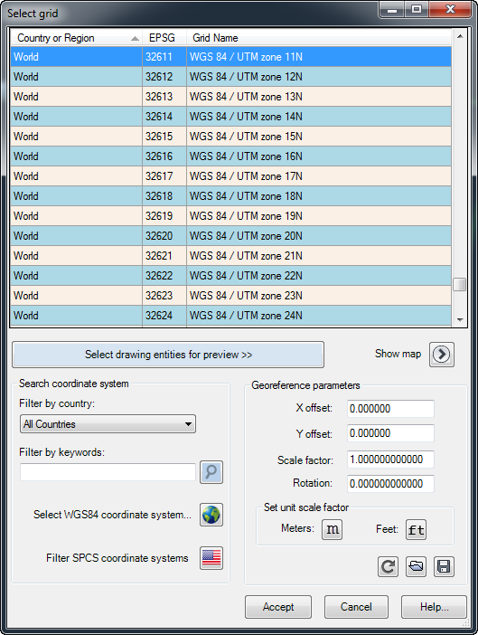
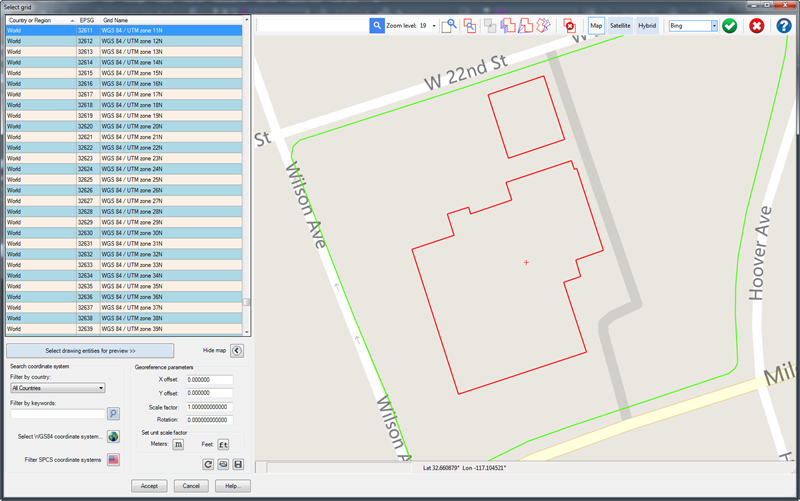
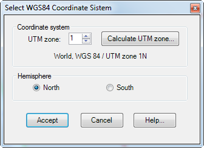
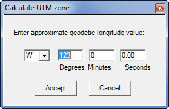

|
|
Toolbar:
Menu: CAD-Earth > Georeference drawing > By selecting a coordinate system
|
|
|
Command line: CE_GEOREFGRID
CAD-Earth version: Basic, Plus, Premium. |
.png)
.png)
Command description:
Using this command the parameters to convert between drawing and the latitude/longitude coordinates of the site can be calculated by selecting a coordinate system. You can select drawing entities to preview them in a map when you select a coordinate system. You can also move, rotate and/or scale these drawing entities until they match the site. The dialog box can be resized or maximized to show more detailed information.

Dialog box to georeference drawing selecting a coordinate system

Dialog box to georeference drawing selecting a coordinate system with drawing entities previewed in a map
ØCoordinate system selection grid. This list displays the available coordinate conversion systems. Double clicking on a row selects the corresponding coordinate system and closes the dialog box. You can sort rows by clicking on any column header. If you have selected drawing entities for preview, every time you select a coordinate system in the list the position of the reference entities will be updated in the map.
ØMap control. You can move, scale and/or rotate selected drawing entities in the map until they match the site. You can also search a location, zoom and pan the map and select different image modes (map, satellite, hybrid) from different providers. The map toolbar buttons are described in detail in the georeference drawing by selecting objects topic.
ØSelect drawing entities for preview button. Pressing this button will temporarily close the dialog box until you select entities in the drawing. Valid entities for selection are lines, polylines, arcs and circles. The selected entities will be automatically shown in the map according to the current coordinate system.
ØShow map button. Press this button to show or hide the map.
ØSearch coordinate system.
•Filter by country. You can filter coordinate systems by selecting the country from the list. If you start to type when the country list is displayed, the corresponding rows will be dynamically filtered
•Filter by keywords. You can type any keyword and the coordinate systems containing the keywords in the country or region, EPSG number or grid name will be shown. The search is case insensitive.
•Select WGS84 coordinate system.
When this button is pressed, the dialog box to select the UTM zone and hemisphere is shown:

Dialog box to select UTM zone and hemisphere
•UTM zone. The UTM system divides the Earth between 80°S and 84°N latitude into 60 different zones. Each zone is 6° of longitude in width. If you know the approximate longitude coordinate the UTM zone can be calculated selecting the 'Calculate UTM zone' button (see fig.). After pressing the accept button the corresponding UTM zone is selected.

Calculate UTM zone dialog box
•Hemisphere. If the site is located above the Earth's Equatorial line the northern hemisphere must be checked, otherwise select the southern hemisphere.
ØGeoreference parameters.
•X and Y offset. This values define the displacement in the horizontal and vertical direction. If the drawing coordinates correspond to the site UTM coordinates, this values will be close or equal to zero.
•Scale factor. The value of this parameter will be equal to 1 if each drawing unit is equal to 1 meter. If you use a measure system other than meters the value of the scale factor will be the conversion factor from the measure system to meters.
•Rotation. If the drawing was made in the corresponding UTM coordinates, the value of this parameter will be close to zero.
•Reset button. Press this button to set offset and rotation values equal to zero and scale factor equal to 1.
•Load geoparameters button. Select to import parameter values from an existing DGW text file.
•Save geoparameters button. Select to save parameter values to a DGW text file.
Tips:
•If the site is located in the United States of America most probably the State Plane Coordinate System (SPCS) was used for the conversion. If this is the case, select 'SPCS (United States)' from the 'Filter by country' list in the 'Select grid dialog box' and choose the grid that most closely match the country sector (North, South, East, West, Central, North Central, South Central, East Central or West Central with the NAD83 or NAD27 datum) . It may be necessary to try several coordinate systems until the objects or images are correctly placed. Feet units and North hemisphere must also be selected for correct conversion.
•If the site is located elsewhere you can select the country in the 'Filter by country' list or type a word in the search box to narrow down the grid list, and select the coordinate system that most closely matches the site location.
•If none of the above recommendations places the images or objects correctly, may be the world standard datum WGS84 or WGS72 was used for coordinate conversion. You can select the 'WGS84 (World)' from the 'Filter by country' in the 'Select grid' dialog box to display only WGS84 coordinates systems or press the 'Select the WGS84 coordinate system' button to specify the UTM zone and hemisphere.
•If you can manually locate the site in Google Earth, you can draw a polygon surrounding the site and then import it to AutoCAD using the CAD-Earth command to import objects from Google Earth with various coordinate system/hemisphere/units settings until the polygon matches your drawing. Then use this coordinate system for every CAD-Earth command to get consistent results.
•In some cases, objects are placed within a few feet/meters from the correct position in Google Earth. This may be due to difference between projection systems. Google Earth uses a cylindrical projection system. If you choose a coordinate system based in another projection (for example, conical) it may be required to adjust the position manually until the object is placed in the correct position. For this reason, in some CAD-Earth commands it is possible to specify offset distances in the X and Y direction before exporting images or objects to Google Earth.
•You can also georeference your drawing by selecting two points or by geolocating drawing entitities in a map.
•You can also use the 'Show georeferenced objects' command to see drawing entities located in a map and make sure you have correctly georeferenced your drawing before using some CAD-Earth commands.
Related topics:
•Georeference drawing by selecting two points
•Georeference drawing by geolocating objects
Copyright © 2023 Arqcom Software
Google Earth© is a registered trademark of Google inc. All other trademarks are the property of their respective owners.